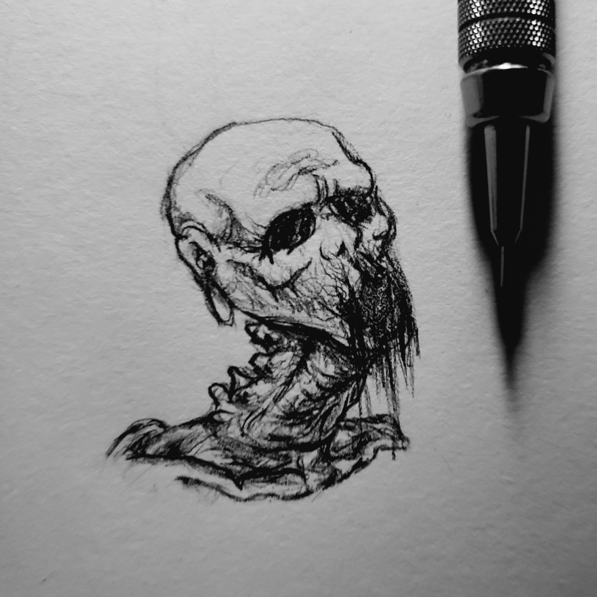

Recent Works
The Babadook
This work was inspired by the film, "The Babadook". I created the piece with separate references of the Babadook
and creepy rooms. I find the design of the character very simple yet terrifying. I wanted to capture the mistery of
his actual form by having him blend into the darkness of the closet.
-December 26, 2019-
Starvation

This is one of my original works. After studying the human skull I became familiar with
it's bone structure and perspective. I wanted to give a slight twist to the bone-only look of the
bust and desided that drawing only very thin layer of muscle and fat would make a morbid skull.
Media
I mainly specialize with simple graphite mechanical pencils. Not having access to specialized art tools as a child, I quickly became comfortable with normal 0.7mm mechanical pencils. Slowly, I started incorporating more useful tools to better my art. I began shading with paper stumps and regular tissue paper for more realistic effects. I then started using higher quality erasers and mechanical pencils with a much smaller lead size. I am slowly moving on to working with pens, ink, and eventually color. I feel that if I master the tools I need to draw and shade in black and white, it will be much easier to adapt to more complex media.
My Style
 As a 10 year old child I was fascinated with the popular book series, "Scary Stories to Tell in the Dark".
I admired the poetry and story telling in the book, but most of all, I was inspired by it's aesthetic.
The drawings in the book, created by Stephen Gammell, were something I had never seen before. Looking back at them now,
they were weirdly PG. However, as a child I felt terrified for the first time in my life. I felt that if I looked at the
drawings for too long they would come to life. This feeling amused me later on in life, and I felt like I wanted to dive
deeper. I became obsessed with knowing why certain things are terrifying to humans, and how a simple pencil on paper can elicit
such strong emotions. I have been deeply involved with this topic ever since, and I plan on getting better and better on depicting true terror.
As a 10 year old child I was fascinated with the popular book series, "Scary Stories to Tell in the Dark".
I admired the poetry and story telling in the book, but most of all, I was inspired by it's aesthetic.
The drawings in the book, created by Stephen Gammell, were something I had never seen before. Looking back at them now,
they were weirdly PG. However, as a child I felt terrified for the first time in my life. I felt that if I looked at the
drawings for too long they would come to life. This feeling amused me later on in life, and I felt like I wanted to dive
deeper. I became obsessed with knowing why certain things are terrifying to humans, and how a simple pencil on paper can elicit
such strong emotions. I have been deeply involved with this topic ever since, and I plan on getting better and better on depicting true terror.